Warning: package 'ggforce' was built under R version 4.4.3
install.packages("dplyr")
The following package(s) will be installed:
- dplyr [1.1.4]
These packages will be installed into "C:/Users/mn27712/OneDrive - University of Georgia/DATA BACKUP/MACBOOK AND IPHONE_/Desktop/MADA2025/muhammadnasir-mada2025/renv/library/windows/R-4.4/x86_64-w64-mingw32".
# Installing packages --------------------------------------------------------
- Installing dplyr ... OK [linked from cache]
Successfully installed 1 package in 53 milliseconds.
#Install package for the data #install.packages("nlmixr2data")#ibrary(nlmixr2data)# Load the datasetdata_loc <-here("fitting-exercise", "data", "Mavoglurant_A2121_nmpk.csv") data <-read_csv(data_loc)
Rows: 2678 Columns: 17
── Column specification ────────────────────────────────────────────────────────
Delimiter: ","
dbl (17): ID, CMT, EVID, EVI2, MDV, DV, LNDV, AMT, TIME, DOSE, OCC, RATE, AG...
ℹ Use `spec()` to retrieve the full column specification for this data.
ℹ Specify the column types or set `show_col_types = FALSE` to quiet this message.
SEX: Sex (1= male, 2= female) # (based on the paper referred )
WT: Weight
HT: Height
summary(data)
ID CMT EVID EVI2
Min. :793.0 Min. :1.000 Min. :0.00000 Min. :0.0000
1st Qu.:832.0 1st Qu.:2.000 1st Qu.:0.00000 1st Qu.:0.0000
Median :860.0 Median :2.000 Median :0.00000 Median :0.0000
Mean :858.8 Mean :1.926 Mean :0.07394 Mean :0.1613
3rd Qu.:888.0 3rd Qu.:2.000 3rd Qu.:0.00000 3rd Qu.:0.0000
Max. :915.0 Max. :2.000 Max. :1.00000 Max. :4.0000
MDV DV LNDV AMT
Min. :0.00000 Min. : 0.00 Min. :0.000 Min. : 0.000
1st Qu.:0.00000 1st Qu.: 23.52 1st Qu.:3.158 1st Qu.: 0.000
Median :0.00000 Median : 74.20 Median :4.306 Median : 0.000
Mean :0.09373 Mean : 179.93 Mean :4.085 Mean : 2.763
3rd Qu.:0.00000 3rd Qu.: 283.00 3rd Qu.:5.645 3rd Qu.: 0.000
Max. :1.00000 Max. :1730.00 Max. :7.456 Max. :50.000
TIME DOSE OCC RATE
Min. : 0.000 Min. :25.00 Min. :1.000 Min. : 0.00
1st Qu.: 0.583 1st Qu.:25.00 1st Qu.:1.000 1st Qu.: 0.00
Median : 2.250 Median :37.50 Median :1.000 Median : 0.00
Mean : 5.851 Mean :37.37 Mean :1.378 Mean : 16.55
3rd Qu.: 6.363 3rd Qu.:50.00 3rd Qu.:2.000 3rd Qu.: 0.00
Max. :48.217 Max. :50.00 Max. :2.000 Max. :300.00
AGE SEX RACE WT
Min. :18.0 Min. :1.000 Min. : 1.000 Min. : 56.60
1st Qu.:26.0 1st Qu.:1.000 1st Qu.: 1.000 1st Qu.: 73.30
Median :31.0 Median :1.000 Median : 1.000 Median : 82.60
Mean :32.9 Mean :1.128 Mean : 7.415 Mean : 83.16
3rd Qu.:40.0 3rd Qu.:1.000 3rd Qu.: 2.000 3rd Qu.: 90.60
Max. :50.0 Max. :2.000 Max. :88.000 Max. :115.30
HT
Min. :1.520
1st Qu.:1.710
Median :1.780
Mean :1.762
3rd Qu.:1.820
Max. :1.930
First of all, it is important to visualize the main variable of interest. In this case, Mavoglurant is the main variable interest (variable response). Spaghetti plot is created to show the individual level of Mavoglurant over the time based on Dose (25, 37.5, and 50).
# Spaghetti plotspaghetti_pot <-ggplot(data, aes(x = TIME, y = DV, group = ID, color =as.factor(ID))) +geom_line(alpha =0.6) +# Adds individual lines with transparencyfacet_wrap(~DOSE)+# to facet by dosetheme_minimal() +# Uses a clean themelabs(title ="Individual level of Mavoglurant over Time by Dose",x ="Time",y ="DV",color ="Subject ID") +theme(legend.position ="none") # Hides legend if too many IDsprint(spaghetti_pot)
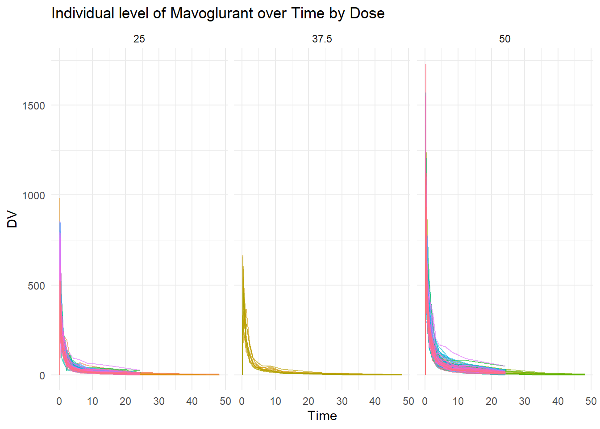
Occasion Rate
A bar chart for Occasion Rate (OCC) is created to look at the distribution of OCC. OCC is one of the interest in this exercise.
plot_occ <-ggplot(data, aes(x =factor(OCC))) +geom_bar(aes(fill =factor(OCC)), show.legend =FALSE, width =0.7) +# Color bars dynamicallyscale_fill_brewer(palette ="Dark2") +# Use a more vibrant color palettelabs(title ="Distribution of Occasion Rate (OCC)",x ="Occasion Rate (OCC)",y ="Count") +theme_minimal(base_size =14) +# Increase text size for readabilitytheme(plot.title =element_text(face ="bold", size =16, hjust =0.5),axis.text.x =element_text(angle =45, vjust =1, hjust =1), # Rotate X labels for claritypanel.grid.major =element_blank(), # Remove major grid lines for a cleaner lookpanel.grid.minor =element_blank() )print(plot_occ)
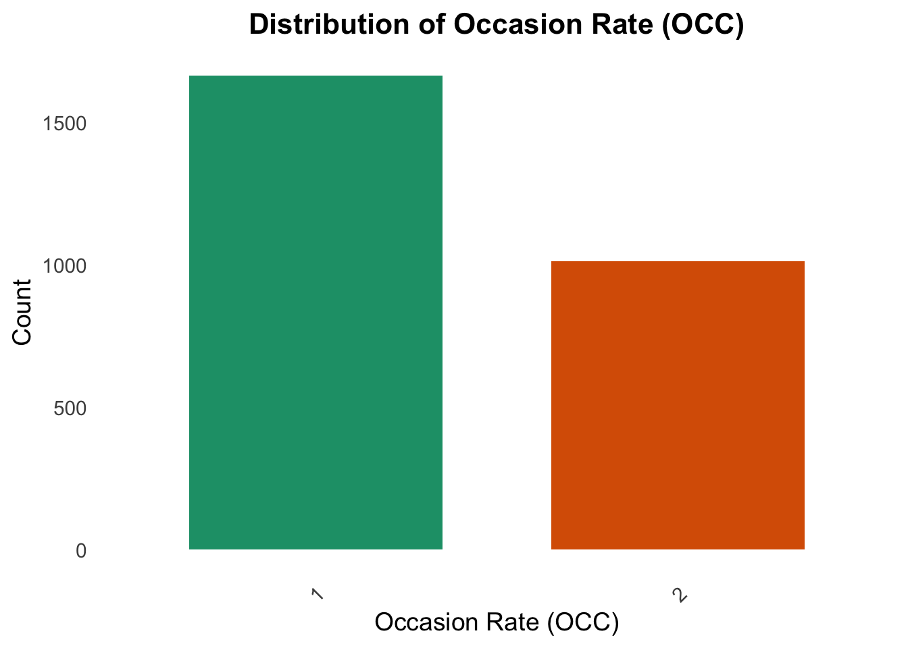
Data Cleaning
First step in the data cleaning, we want to select only OCC= 1, and calculate summary of Mavoglurant
#OCC =1 data1 <- data %>%filter(OCC==1) #select rows with OCC=1 only
Summary_DV <- data1 %>%filter(TIME !=0) %>%# Remove rows where TIME is 0group_by(ID) %>%summarize(Y =sum(DV, na.rm =TRUE)) # Corrected sum functionprint(Summary_DV)
df <- data_combined %>%select(Y, DOSE, AGE, SEX, RACE, WT, HT) %>%#Selecting variables of Interestmutate(RACE =as_factor(RACE), SEX =as_factor(SEX)) #To convert race and sex to factor variablesstr(df)# check the variable classes
In this section, the data is visualized using appropriate table, charts or graphics based on the data type. it is better to provide a big picture of the data by providing summary table (Characteristic Table). The table will help understand the data better.
Create summary table
tbl_summary(df)
Characteristic
N = 1201
Y
2,349 (1,689, 3,054)
DOSE
25
59 (49%)
37.5
12 (10%)
50
49 (41%)
AGE
31 (26, 41)
SEX
1
104 (87%)
2
16 (13%)
RACE
1
74 (62%)
2
36 (30%)
7
2 (1.7%)
88
8 (6.7%)
WT
82 (73, 90)
HT
1.77 (1.70, 1.82)
1 Median (Q1, Q3); n (%)
Based on the table above, 120 participants received a single 25 mg, 37.5 mg or 50 mg of MVG (49%, 10%, and 41% respectively). Most subjects were young (mean age of 33 years), race group one (62 %), male (87 %) with a mean BW of 83 kg and mean of HT of 1.76 m.
Summary Table for all variables based on sex
# Summary table for all variables by SEXdf %>%tbl_summary(by=SEX, type=list(where(is.numeric) ~"continuous"), # Specifies that all numeric variables should be treated asstatistic=list(all_continuous() ~"{median} ({p25}, {p75})"), #Numeric (continuous) variables will be summarized using the median and interquartile range (IQR: 25th and 75th percentiles).digits=list(all_continuous() ~0, HT ~2), # Specifies that all continuous variables should be rounded to 0 decimal places, except for HT (Height), which is rounded to 2 decimal places.label=list(Y ~"Response", DOSE ~"Drug dose", AGE ~"Age", RACE ~"Race", WT ~"Weight", HT ~"Height")) %>%add_p(test=list(all_continuous() ~"wilcox.test",all_categorical() ~"fisher.test"), # test differences between groups (SEX in this case).pvalue_fun=function(x) style_number(x, digits=3)) %>%modify_header(p.value="*p*-value") %>%modify_spanning_header(all_stat_cols() ~"**Sex**") %>%as_gt()
Characteristic
Sex
p-value2
1 N = 1041
2 N = 161
Response
2,398 (1,722, 3,083)
2,060 (1,478, 2,728)
0.296
Drug dose
38 (25, 50)
25 (25, 44)
0.191
Age
30 (25, 39)
42 (38, 46)
0.000
Race
0.324
1
63 (61%)
11 (69%)
2
33 (32%)
3 (19%)
7
1 (1.0%)
1 (6.3%)
88
7 (6.7%)
1 (6.3%)
Weight
83 (75, 92)
70 (63, 82)
0.001
Height
1.78 (1.73, 1.82)
1.63 (1.58, 1.67)
0.000
1 Median (Q1, Q3); n (%)
2 Wilcoxon rank sum test; Fisher’s exact test
For better understanding about the data, data are visualized in Histogram and Boxplot
Histogram of Weight and height distribution
# Create a histogram for WT (Weight)plot1 <-ggplot(df, aes(x = WT)) +geom_histogram(binwidth =5, fill ="#EEAEEE", color ="black", alpha =0.7) +# Blue fill, black border, transparencylabs(title ="Histogram of Weight (WT)",x ="Weight (kg)",y ="Count") +theme_minimal(base_size =14) +# Improves readabilitytheme(plot.title =element_text(hjust =0.5, face ="bold", size =16),axis.title =element_text(size =14),axis.text =element_text(size =12) ) +geom_density(aes(y = ..count.. *5), color ="red", linetype ="dashed", size =1) # Add smooth density curve
Warning: Using `size` aesthetic for lines was deprecated in ggplot2 3.4.0.
ℹ Please use `linewidth` instead.
# Create a histogram for HT (Height)plot2 <-ggplot(df, aes(x = HT)) +geom_histogram(position ="identity", fill ="#EEB4B4", color ="black", alpha =0.7) +# Blue fill, black border, transparencylabs(title ="Histogram of Height (HT)",x ="Height (cm)",y ="Count") +theme_minimal()#Combine the histogram plot1 + plot2
Warning: The dot-dot notation (`..count..`) was deprecated in ggplot2 3.4.0.
ℹ Please use `after_stat(count)` instead.
`stat_bin()` using `bins = 30`. Pick better value with `binwidth`.
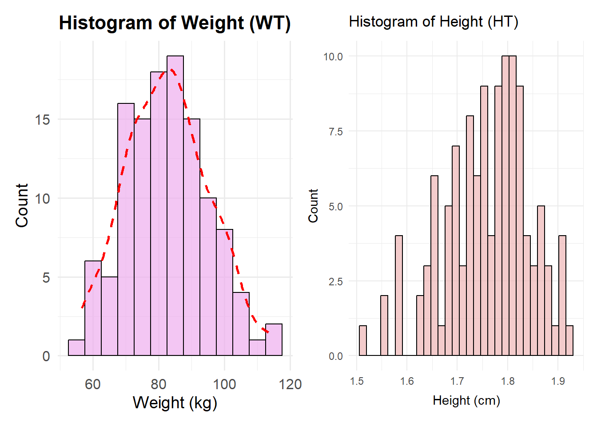
Based on the Histogram of Weight, the weight is slighly skewed to the right. On the other hand, the height is skewed to the left. It is indicating that the data is not normally distributed both Weight and Heigth.
Boxplot of Y variable based on Categorical Variables
Boxplots were created to better visualization between response variable based on sex, race and dose.
# Boxplot of Y by SEXboxplot_sex <-ggplot(df, aes(x =factor(SEX), y = Y, fill =factor(SEX))) +geom_boxplot(alpha =0.7, color ="black") +# Add transparency and black borderslabs(title ="Boxplot of Y by SEX",x ="Sex",y ="Y") +theme_minimal(base_size =14) +# Improve readabilitytheme(plot.title =element_text(hjust =0.5, face ="bold", size =16),axis.title =element_text(size =14),axis.text =element_text(size =12),legend.position ="none", # Remove legend since SEX is on x-axispanel.border =element_rect(color ="black", fill =NA, size =1) # Add frame ) +scale_fill_brewer(palette ="Pastel1") # Use a nice color palette
Warning: The `size` argument of `element_rect()` is deprecated as of ggplot2 3.4.0.
ℹ Please use the `linewidth` argument instead.
# Boxplot of Y by DOSEboxplot_dose <-ggplot(df, aes(x =factor(DOSE), y = Y, fill =factor(DOSE))) +geom_boxplot(alpha =0.7, color ="black") +# Add transparency and black borderslabs(title ="Boxplot of Y by DOSE",x ="Dose",y ="Y") +theme_minimal(base_size =14) +# Improve readabilitytheme(plot.title =element_text(hjust =0.5, face ="bold", size =16),axis.title =element_text(size =14),axis.text =element_text(size =12),legend.position ="none", # Remove legend since DOSE is on x-axispanel.border =element_rect(color ="black", fill =NA, size =1) # Add frame ) +scale_fill_brewer(palette ="Set2") # Use a distinct color palette# Boxplot of Y by RACEboxplot_race <-ggplot(df, aes(x =factor(RACE), y = Y, fill =factor(RACE))) +geom_boxplot(alpha =0.7, color ="black") +# Transparent boxes with black borderslabs(title ="Boxplot of Y by RACE",x ="Race",y ="Y") +theme_minimal(base_size =14) +# Improve readabilitytheme(plot.title =element_text(hjust =0.5, face ="bold", size =16),axis.title =element_text(size =14),axis.text =element_text(size =12),legend.position ="none", # Remove legend since RACE is already labeled on x-axispanel.border =element_rect(color ="black", fill =NA, size =1) # Add frame ) +scale_fill_brewer(palette ="Set3") # Apply a nice color palette# Combine the boxplots(boxplot_sex + boxplot_dose) / boxplot_race
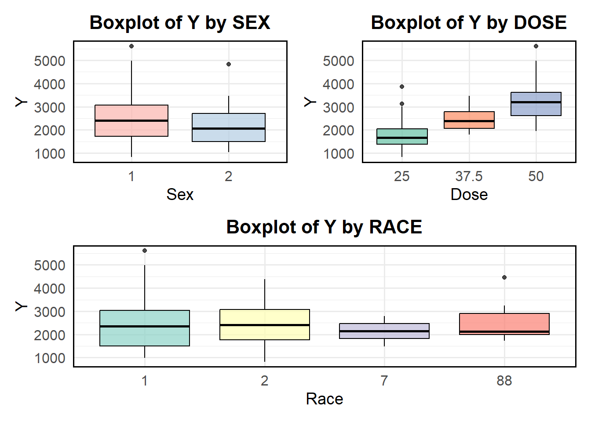
Based on the boxplot above, the mean of response (y) is higher in sex1 compared to sex 2. In the dose category, it can be seen that the higher dose, the higher mean of response variable Y. Moreover, Race 1 and 2 have higher mean of Y compared two other races.
scatter plot of y based on continouse variables
Scatter plot is better way to show the relationship between continouse variable (both response and predictors). Loess method is used to draw the regression line to clearly look at nonlinear relationship between Y and predictors.
# Scatterplot of Y by AGEplot_age <-ggplot(df, aes(x = AGE, y = Y)) +geom_point(alpha =0.7, size =2, fill="#EE00EE", color="#EE00EE", stroke=1, shape=18) +# Transparent points for better visibilitygeom_smooth(method ="loess", se =TRUE, color ="black", linetype ="dashed", size =1) +# Regression linelabs(title ="Y vs Age",x ="Age",y ="Y") +theme_bw()+theme(axis.title=element_text(size=10, color="black", face="bold"),axis.text=element_text(size=8, color="black"),plot.title=element_text(size=12, color="black", face="bold", hjust=0.5,))# Scatterplot of Y by WT (Weight)plot_wt <-ggplot(df, aes(x = WT, y = Y)) +geom_point(alpha =0.7, size =2, fill="#9ACD32", color="#9ACD32", stroke=1, shape=18) +# Transparent points for better visibilitygeom_smooth(method ="loess", se =TRUE, color ="black", linetype ="dashed", size =1) +# Regression linelabs(title ="Y vs WT",x ="Weight",y ="Y") +theme_bw()+theme(axis.title=element_text(size=10, color="black", face="bold"),axis.text=element_text(size=8, color="black"),plot.title=element_text(size=12, color="black", face="bold", hjust=0.5))# Scatterplot of Y by HT (Height) with correct color scaleplot_ht<-ggplot(df, aes(x = HT, y = Y)) +geom_point(alpha =0.7, size =2, fill="#EE4000", color="#EE4000", stroke=1, shape=18) +# Transparent points for better visibilitygeom_smooth(method ="loess", se =TRUE, color ="black", linetype ="dashed", size =1) +# Regression linelabs(title ="Y vs HT",x ="Height",y ="Y") +theme_bw()+theme(axis.title=element_text(size=10, color="black", face="bold"),axis.text=element_text(size=8, color="black"),plot.title=element_text(size=12, color="black", face="bold", hjust=0.5))# Combine and output the three scatterplotsggarrange(plot_age, plot_wt, plot_ht, ncol=3, nrow=1, align="h", heights=c(1, 1, 1))
`geom_smooth()` using formula = 'y ~ x'
`geom_smooth()` using formula = 'y ~ x'
`geom_smooth()` using formula = 'y ~ x'
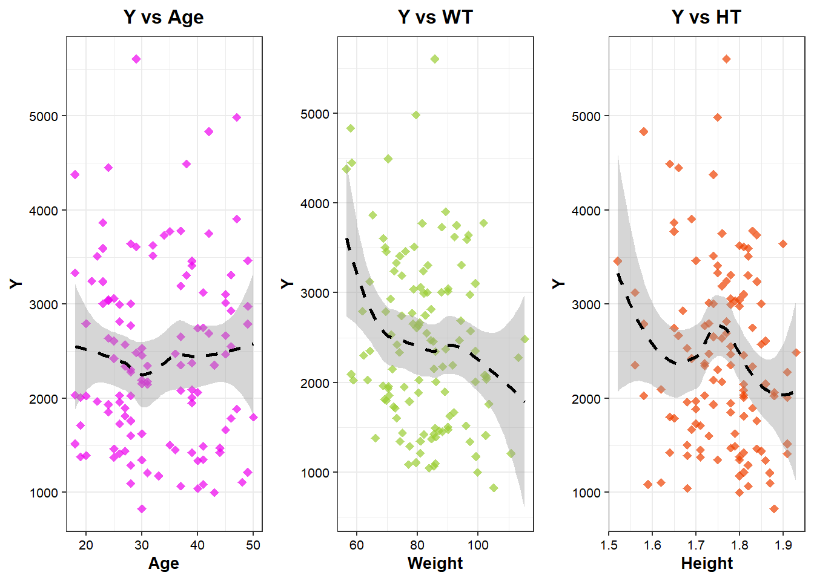
Based on the scatter plots above, it can be seen that there is no linear relationship between Y and the predictors. - For Age, the trend appears somewhat flat with fluctuations, indicating weak or no strong association. The confidence interval (shaded area) is wide, especially at the edges, suggesting greater uncertainty in predictions at extreme ages. There is a large spread of data points, meaning variability in Y is high across different age.
For Weight, the confidence interval is relatively narrow in the middle but widens at lower and higher WT values, indicating more uncertainty at extreme weights. There is a cluster of data points around a moderate WT range, with more variability at lower and higher weights.
For height, the LOESS curve exhibits a U-shaped or fluctuating trend, suggesting a non-linear relationship between Height and Y. Initially, Y decreases with increasing Height, but at certain points, it fluctuates and slightly increases. The confidence interval is wider at extreme heights, suggesting greater uncertainty in predictions. The spread of data is relatively uniform, but there are some extreme Y values.
# Scatterplot Y vs Raceplot_race <-ggplot(df, aes(x =factor(RACE), y = Y, color =factor(RACE))) +geom_jitter(alpha =0.7, size =2, width =0.2) +# Jitter to avoid overlapping pointsgeom_boxplot(outlier.shape =NA, alpha =0.3) +# Boxplot for distributionlabs(title ="Scatterplot of Y by Race",x ="Race",y ="Outcome Variable (Y)") +theme_minimal(base_size =14) +scale_color_brewer(palette ="Set1") +theme(panel.border =element_rect(color ="black", fill =NA, size =1) # Add frame border )# Scatterplot Y vs SEXplot_sex <-ggplot(df, aes(x =factor(SEX), y = Y, color =factor(SEX))) +geom_jitter(alpha =0.7, size =2, width =0.2) +# Jitter to separate overlapping pointsgeom_boxplot(outlier.shape =NA, alpha =0.3) +# Boxplot for visualizationlabs(title ="Scatterplot of Y by Sex",x ="Sex",y ="Outcome Variable (Y)") +theme_minimal(base_size =14) +scale_color_brewer(palette ="Dark2") +# Different color schemetheme(panel.border =element_rect(color ="black", fill =NA, size =1) # Add frame border )# Scatterplot Y vs Dosesplot_dose <-ggplot(df, aes(x =factor(DOSE), y = Y, color =factor(DOSE))) +geom_jitter(alpha =0.7, size =2, width =0.2) +# Jitter for better visualizationgeom_boxplot(outlier.shape =NA, alpha =0.3) +# Boxplot for distributionlabs(title ="Scatterplot of Y by Dose",x ="Dose",y ="Outcome Variable (Y)") +theme_minimal(base_size =14) +scale_color_brewer(palette ="Set3") +# Different color schemetheme(panel.border =element_rect(color ="black", fill =NA, size =1) # Add frame border )# Combine and output the three scatterplotsggarrange(ggarrange(plot_race, plot_sex, ncol =2, nrow =1), # Row 1: Two plots side by side plot_dose, # Row 2: Full-width plotncol =1, nrow =2, # 2 rows totalheights =c(2, 2) # Equal height for both rows)
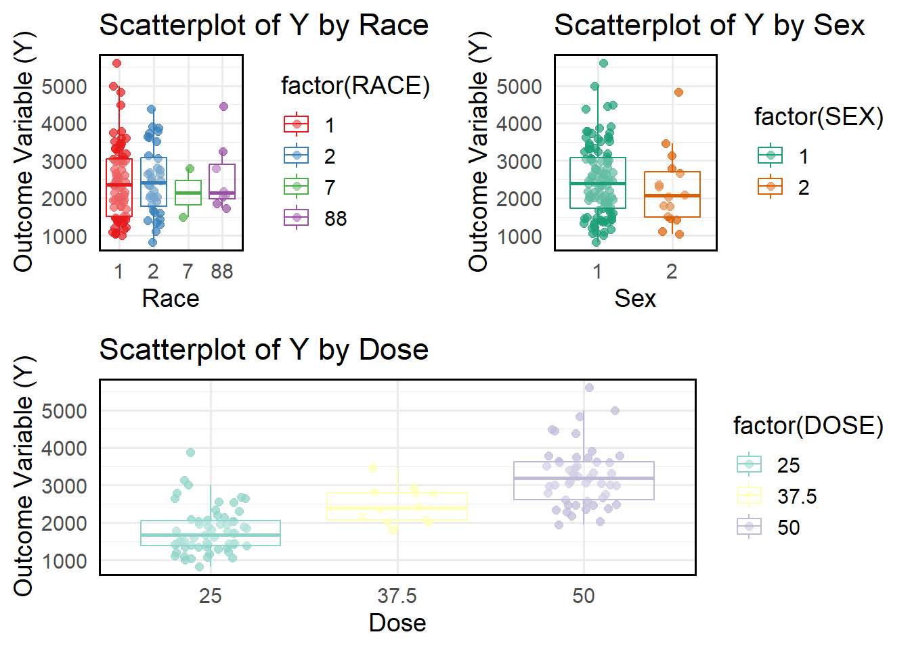
Based on the scatter plot above, race 1 has a wider spread of Y values with more extreme values (outliers). The spread of Y for Sex 1 is slightly larger than for Sex 2. Sex 2 appears to have slightly higher median Y values. The interquartile range (IQR) suggests that the distribution of Y values differs between sexes.The median Y value increases with increasing dose. The spread of Y also increases as the dose increases. The dose group 50 shows the widest variability, with more extreme values.
# Select only continuous variables (excluding categorical variables like SEX, RACE, DOSE)df_cont <- df %>%select(where(is.numeric))# Compute correlation matrixcor_matrix <-cor(df_cont, use ="complete.obs") # Use only complete cases# Visualize correlation matrix with correlation valuescorrplot(cor_matrix, method ="color", # Color-coded visualizationtype ="lower", # Show only lower triangle to reduce redundancytl.col ="black", # Black text labels for variable namestl.srt =45, # Rotate labels for better readabilityaddCoef.col ="black", # Show correlation values in blacknumber.cex =0.8) # Adjust text size for correlation numbers
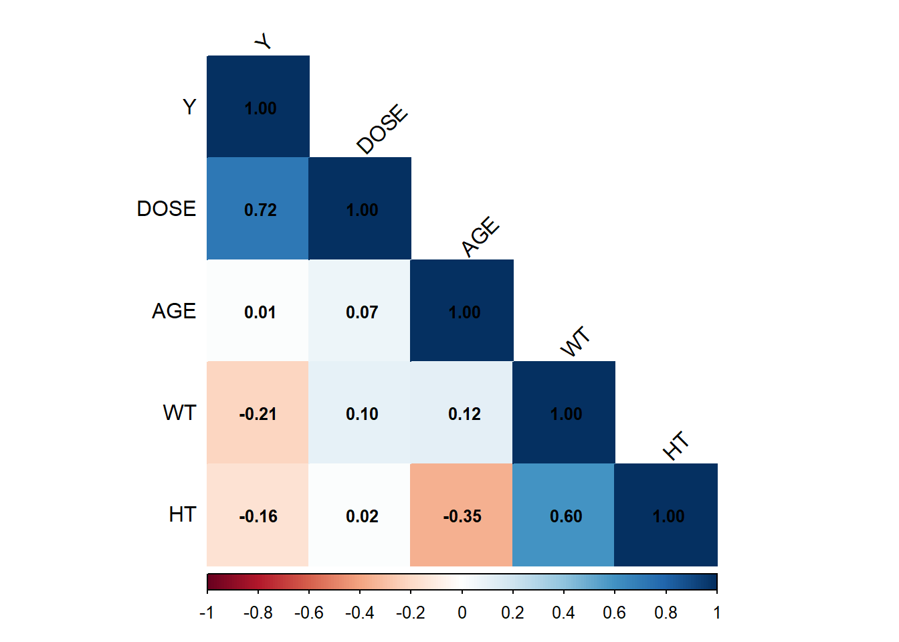
Based on the correlation matrix, DOSE is the strongest predictor of Y, showing a positive correlation (0.72). AGE does not seem to have a meaningful relationship with any variable. Weight (WT) and Height (HT) are moderately correlated (0.60), which makes sense biologically. There are weak negative correlations of Y with WT and HT, but their impact is likely small.
Model Fitting
Model 1: Y ~ Dose For model fitting, I will start with simple model (y~ DOSE). Tidymodels is used in this modeling.
df$DOSE <-as.factor(df$DOSE)# Linear regression: Y ~ DOSEm1 <-linear_reg() %>%set_engine("lm") %>%fit(Y ~ DOSE, df)# Output the fitting resulttidy(m1)
Intercept (Baseline: DOSE 25): the estimated mean Y when using DOSE 25 is 1782.67
DOSE 37.5 (681.24): increasing DOSE from 25 to 37.5 leads to an increase in Y by 681.24 on average with p-value = 0.0018 (< 0.05) → This effect is statistically significant.
DOSE 50 (1456.20): increasing DOSE from 25 to 50 leads to an increase in Y by 1456.20 on average. p-value < 0.0001 → Strong evidence that this effect is statistically significant.
Interpretation: - The intercept (4890.92) represents the expected Y value when all predictors are zero. - Dose 37.5, Dose 50, and Weight are statistically significant with Y. Doses have positive relationship with Y, while Weight had significant effect on Y. Other predictors are not statistically correlated with Y.
# A tibble: 3 × 3
.metric .estimator .estimate
<chr> <chr> <dbl>
1 rmse standard 590.
2 rsq standard 0.620
3 mae standard 445.
Based on the RMSE and R-Squared, model 2 (all predictors) performed better fit to the data compared to Model 1 (Dose Only) with RMSE and R-Squared (666.31 and 0.51 respectively for model 1, and 590.31 and 0.62 for model 2).
The Intercept is significant, meaning there is an underlying distribution of SEX probabilities. Neither DOSE37.5 nor DOSE50 significantly affect SEX because their p-values > 0.05. This suggests that DOSE does not strongly predict SEX.
Model 4: Logistic Regression (Sex ~ All Predictors)
#SEX ~ all predictorsm4 <-logistic_reg() %>%set_engine("glm") %>%set_mode("classification") %>%fit(SEX ~ DOSE + AGE + RACE + WT + HT, df)# Output the fitting resulttidy(m4)
Based on the output, only Height is significantly correlated with Sex. Dose levels have a small, negative, but non-significant effect on Sex. Age, race and WT are not significant with Sex.
# Create a data frame for both modelsmetrics_df <-data.frame(metric =rep(c("accuracy", "kap", "mn_log_loss", "roc_auc"), 2), # Repeating metricsestimate =c(0.8667, 0.0000, 0.3843, 0.5919, # First model0.9500, 0.7716, 0.1334, 0.9784), # Second modelmodel =rep(c("Model 1", "Model 2"), each =4) # Model labels)# Create a grouped bar plotggplot(metrics_df, aes(x = metric, y = estimate, fill = model)) +geom_bar(stat ="identity", position ="dodge", color ="black", alpha =0.8) +# Grouped barslabs(title ="Comparison of Model Performance Metrics",x ="Metric",y ="Score",fill ="Model") +theme_minimal(base_size =14) +# Clean themescale_fill_manual(values =c("Model 1"="lightpink", "Model 2"="lightblue")) +# Custom colorstheme(plot.title =element_text(hjust =0.5, face ="bold", size =16),axis.title =element_text(size =14),axis.text =element_text(size =12) )
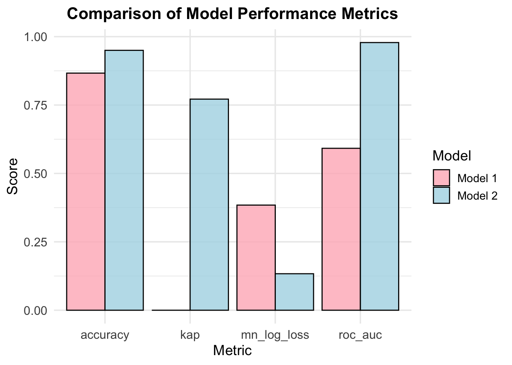
Interpretation: - Model 2 (accuracy 0.95) is more accurate in making correct predictions than Model 1 (accuracy 0.87). - Kappa measures how well the model’s predictions agree with the true labels, adjusting for chance. Model 2 shows a much stronger agreement with the actual data, while Model 1 shows almost no agreement beyond chance. - Lower log loss indicates better probabilistic predictions. Model 2 has a significantly lower log loss, meaning its probability estimates are more reliable. - A higher ROC AUC means the model is better at distinguishing between classes. Model 2 is much better than Model 1 at identifying positive vs. negative classes.
Module 10 Part 1
In this exercise, we will use the data from previous part.
Y DOSE AGE SEX WT
Min. : 826.4 25 :59 Min. :18.00 1:104 Min. : 56.60
1st Qu.:1700.5 37.5:12 1st Qu.:26.00 2: 16 1st Qu.: 73.17
Median :2349.1 50 :49 Median :31.00 Median : 82.10
Mean :2445.4 Mean :33.00 Mean : 82.55
3rd Qu.:3050.2 3rd Qu.:40.25 3rd Qu.: 90.10
Max. :5606.6 Max. :50.00 Max. :115.30
HT
Min. :1.520
1st Qu.:1.700
Median :1.770
Mean :1.759
3rd Qu.:1.813
Max. :1.930
First, I am setting a seed rngseed using a 7%% for train set and a 25% for test set.
# Set seedrngseed <-1234set.seed(rngseed)# Split dataset into a 75% train set and a 25% test setsplitted_m10 <-initial_split(m10_df, prop=.75)train_data <-training(splitted_m10)test_data <-testing(splitted_m10)
Model Fitting
In this part, I will fit two models with y as an outcome. Model one has one predictor (dose), and another model include all predictors. Plus Null Model, which can be used to compare the RMSE.
# Print RMSE for Y~DOSE RMSE_train_DOSE <-rmse(dose_preds_train, truth = Y, estimate = .pred)# Print RMSE for Y~ All Predictors RMSE_train_All <-rmse(all_preds_train, truth = Y, estimate = .pred)# Print RMSE for the NUll model RMSE_train_Null <-rmse(null_preds_train, truth = Y, estimate = .pred)
Based on the output from three different models, RMSEs for model with DOSE only, all predictors, and null are 702.8, 627.3, 948.36 respectively. We can conclude that Regression model including all predictors is the best model for the dataset with the lowest RMSE.
Model Performance Assessment 2
In this part, cross validation is performed by using a 10 fold cross-validation (CV) to examine the performance of the models.
#set seedset.seed(rngseed)#Getting the CV folds establishedfolds <-vfold_cv(train_data, v =10)
Now I am going to fit the model with only DOSE as predictor to 9 of the splits for 10 times, and calculate the RMSE
#Y~DOSE # Model settingm1_10_spec <-linear_reg() %>%set_engine("lm") %>%set_mode("regression")# Set the workflow: model 1m1_10_cv <-workflow() %>%add_model(m1_10_spec) %>%add_formula(Y ~ DOSE)# Set seedset.seed(rngseed)# Fit the datam1_10_cv_fit <- m1_10_cv %>%fit_resamples(folds)# Mean and SE of RMSEcollect_metrics(m1_10_cv_fit)
# A tibble: 2 × 6
.metric .estimator mean n std_err .config
<chr> <chr> <dbl> <int> <dbl> <chr>
1 rmse standard 697. 10 68.1 Preprocessor1_Model1
2 rsq standard 0.500 10 0.0605 Preprocessor1_Model1
Fitting model with all predictors
#Y~ All Predictors # Model settingm2_10_spec <-linear_reg() %>%set_engine("lm") %>%set_mode("regression")# Set the workflow: model 1m2_10_cv <-workflow() %>%add_model(m1_10_spec) %>%add_formula(Y ~ DOSE + AGE + SEX + WT + HT )# Set seedset.seed(rngseed)# Fit the datam2_10_cv_fit <- m2_10_cv %>%fit_resamples(folds)# Mean and SE of RMSEcollect_metrics(m2_10_cv_fit)
# A tibble: 2 × 6
.metric .estimator mean n std_err .config
<chr> <chr> <dbl> <int> <dbl> <chr>
1 rmse standard 653. 10 63.6 Preprocessor1_Model1
2 rsq standard 0.561 10 0.0717 Preprocessor1_Model1
Based on the output, Model 2 has a lower RMSE (652.77 vs. 696.71), indicating that it predicts the response variable Y more accurately than Model 1. The standard error (std_err) is slightly lower in Model 2 (63.60 vs. 68.10), which suggests that Model 2 is more stable across different CV folds.For the R², Model 2 has a higher R² (0.5608 vs. 0.5000), meaning it explains 56.08% of the variance in Y, compared to Model 1, which explains only 50.00%. The standard error of R² is slightly higher in Model 2, meaning there is more variation in R² across folds, but the difference is minor.
Validate using different set.deed
# New Set seedset.seed(3456)#10-fold sapling folds_new_cv <-vfold_cv(train_data, v=10)#Y~DOSE set.seed(3456)# Model settingm1_10_spec <-linear_reg() %>%set_engine("lm") %>%set_mode("regression")# Set seedset.seed(3456)# Fit the datam1_10_cv_fit_new <- m1_10_cv %>%fit_resamples(folds_new_cv )# Mean and SE of RMSEcollect_metrics(m1_10_cv_fit_new)
# A tibble: 2 × 6
.metric .estimator mean n std_err .config
<chr> <chr> <dbl> <int> <dbl> <chr>
1 rmse standard 691. 10 72.7 Preprocessor1_Model1
2 rsq standard 0.562 10 0.0638 Preprocessor1_Model1
#Y~ All Predictors # Set seed# Fit the datam2_10_cv_fit_new <- m2_10_cv %>%fit_resamples(folds_new_cv)# Mean and SE of RMSEcollect_metrics(m2_10_cv_fit_new)
# A tibble: 2 × 6
.metric .estimator mean n std_err .config
<chr> <chr> <dbl> <int> <dbl> <chr>
1 rmse standard 643. 10 66.7 Preprocessor1_Model1
2 rsq standard 0.588 10 0.0510 Preprocessor1_Model1
Model 2 performs better than Model 1, as it has a lower RMSE (643.02 vs. 690.78). This suggests that Model 2 has improved predictive accuracy and makes smaller errors in predicting Y. fFr R², Model 2 has a higher R² (0.5876 vs. 0.5624), meaning it explains more variance in Y. A higher R² suggests Model 2 fits the data better than Model 1. The result is consistent with original model.
Module 10 Part 2 : This section was added by Yufei Wu
Model predictions
# Generate predictions and combine with observed valuespredictions_dose <-predict(m1_10, train_data) %>%mutate(Model ="Y ~ DOSE") %>%bind_cols(train_data %>%select(Y))predictions_all <-predict(m2_10, train_data) %>%mutate(Model ="Y ~ All Predictors") %>%bind_cols(train_data %>%select(Y))predictions_null <-predict(m3_10, train_data) %>%mutate(Model ="Null Model") %>%bind_cols(train_data %>%select(Y))# Combine all predictions into one dataframepredictions_df <-bind_rows(predictions_dose, predictions_all, predictions_null) %>%rename(Observed = Y, Predicted = .pred)# Create the scatter plotggplot(predictions_df, aes(x = Observed, y = Predicted, color = Model, shape = Model)) +geom_point(alpha =0.7) +geom_abline(slope =1, intercept =0, linetype ="dashed", color ="black") +# 45-degree linescale_x_continuous(limits =c(0, 5000)) +scale_y_continuous(limits =c(0, 5000)) +labs(title ="Observed vs Predicted Values",x ="Observed Values",y ="Predicted Values") +theme_minimal() +theme(legend.position ="bottom")
Warning: Removed 3 rows containing missing values or values outside the scale range
(`geom_point()`).
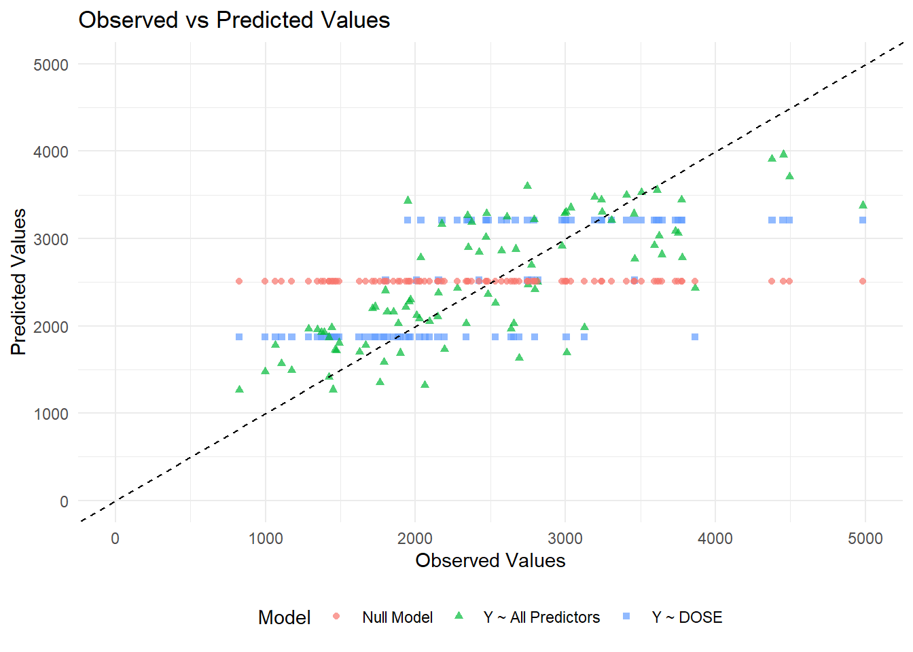
From the plot, we can see that the data from the null model are a straight horizontal line (red line) since we predict the same mean for each observation. For model 1, which only includes dose, the data falls along three horizontal lines (blue lines). This may be because the DOSE variable only takes three values (25 mg, 37.5 mg, or 50 mg). Thus, we only get three different predicted values for the outcome. The model 2 looks the best since the points fall along the 45 degree line. However, there seems to be some pattern to the scatter with model predictions lower than observed values for high values.
Now plot predicted versus residuals:
# Compute residuals for Model 2residuals_df <-predict(m2_10, train_data) %>%bind_cols(train_data %>%select(Y)) %>%mutate(Residuals = .pred - Y, Predicted = .pred)# Find the max absolute residual for symmetric y-axis limitsresidual_limit <-max(abs(residuals_df$Residuals))# Load ggplot2 for visualizationlibrary(ggplot2)# Create residuals plotggplot(residuals_df, aes(x = Predicted, y = Residuals)) +geom_point(alpha =0.7, color ="blue") +# Scatter plot of residualsgeom_hline(yintercept =0, linetype ="dashed", color ="red") +# Reference line at 0scale_y_continuous(limits =c(-residual_limit, residual_limit)) +# Symmetric y-axislabs(title ="Predicted vs Residuals (Model 2)",x ="Predicted Values",y ="Residuals") +theme_minimal()
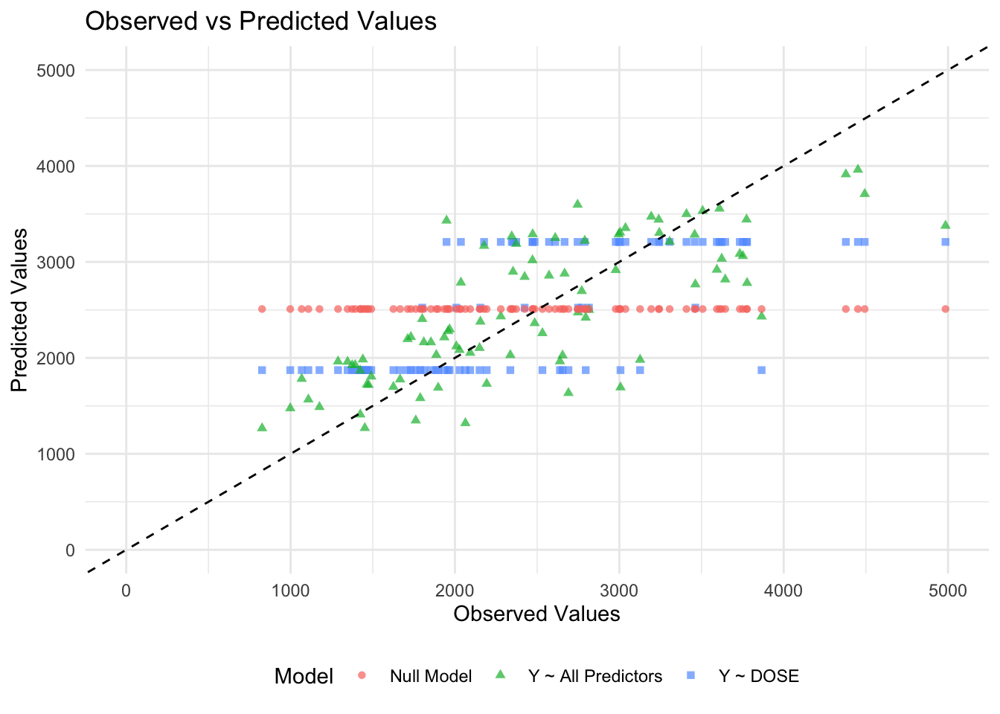
There is a residual pattern that there are more and higher negative values than positive values.
Model predictions and uncertainty
#set seedset.seed(rngseed)# Create 100 bootstrap samplesdat_bs <-bootstraps(train_data, times =100)# Fit the model to each bootstrap sample and store predictionspred_bs <-matrix(NA, nrow =nrow(train_data), ncol =100)for (i in1:100) {# Extract bootstrap sample dat_sample <-analysis(dat_bs$splits[[i]])# Fit model to bootstrap sample m2_bs <-linear_reg() %>%set_engine("lm") %>%fit(Y ~ DOSE + AGE + SEX + WT + HT, data = dat_sample)# Make predictions for original training data pred_bs[, i] <-predict(m2_bs, train_data)$.pred}# Compute mean and confidence intervals for predictionspreds <-apply(pred_bs, 1, quantile, probs =c(0.055, 0.5, 0.945)) |>t()colnames(preds) <-c("Lower", "Median", "Upper")# Compute point estimate from the original modelpoint_estimate <-predict(m2_10, train_data)$.pred# Create dataframe with observed values, point estimates, and bootstrap statisticsplot_data <- train_data %>%mutate(Point_Estimate = point_estimate,Median = preds[, "Median"],Lower = preds[, "Lower"],Upper = preds[, "Upper"])# Load ggplot2 for visualizationlibrary(ggplot2)# Create the plotggplot(plot_data, aes(x = Y)) +geom_point(aes(y = Point_Estimate), color ="black", shape =16, alpha =0.7) +# Point estimatesgeom_point(aes(y = Median), color ="blue", shape =16, alpha =0.7) +# Bootstrap mediangeom_errorbar(aes(ymin = Lower, ymax = Upper), color ="red", width =0.2, alpha =0.5) +# Confidence intervalsgeom_abline(slope =1, intercept =0, linetype ="dashed", color ="black") +# 45-degree linescale_x_continuous(limits =c(0, 6000)) +scale_y_continuous(limits =c(0, 6000)) +labs(title ="Observed vs Bootstrap Confidence Intervals",x ="Observed Values",y ="Predicted Values") +theme_minimal() +theme(legend.position ="bottom")
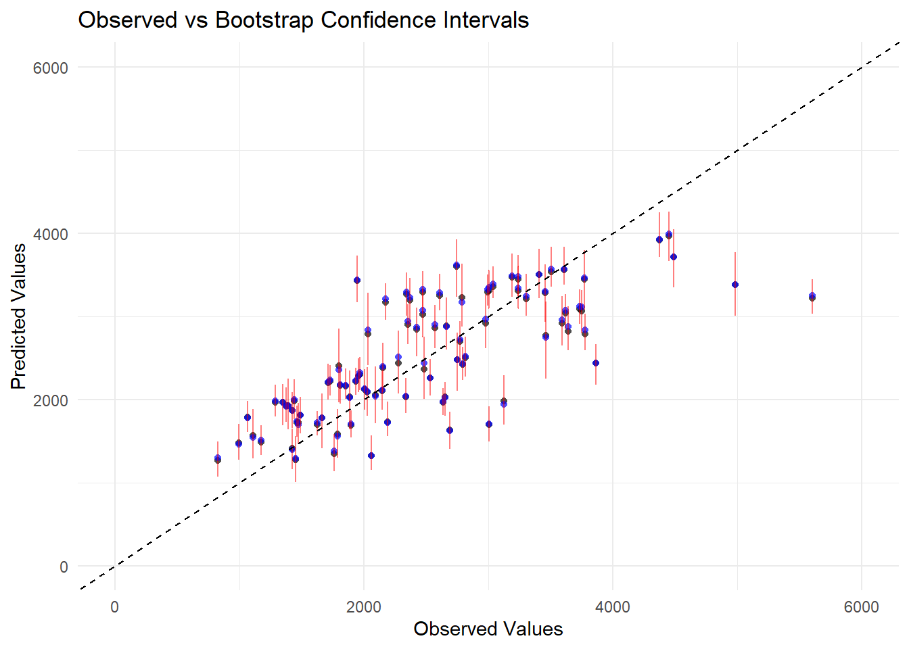
From the figure, we can see that the bootstrap median values align closely with the point estimate, which suggests that the model is fairly stable across different resampled datasets. Besides, the error bars show that the confidence intervals are wider at some higher values, ndicate higher uncertainty in those predictions. Again, most points fall along the 45 degree line except some predictions lower than observed values at high value area.
Module 10 Part 3
# Make predictions on test dataall_preds_test <-predict(m2_10, test_data) %>%bind_cols(test_data)#compute RMSE for test data 'all_rmse_test <-rmse(all_preds_test, truth = Y, estimate = .pred)print(all_rmse_test)
# A tibble: 1 × 3
.metric .estimator .estimate
<chr> <chr> <dbl>
1 rmse standard 518.
predictions_train <- all_preds_train %>%mutate(Dataset ="Train")predictions_test <- all_preds_test %>%mutate(Dataset ="Test")#Combine train and test predictionspred_combined <-bind_rows(predictions_train, predictions_test)
ggplot(pred_combined , aes(x = Y, y = .pred, color = Dataset, shape = Dataset)) +geom_point(alpha =0.6) +# Scatter points for observed vs predictedgeom_abline(slope =1, intercept =0, linetype ="dashed", color ="black") +# Reference 45-degree linescale_x_continuous(limits =c(0, 5000)) +# Set x-axis rangescale_y_continuous(limits =c(0, 5000)) +# Set y-axis rangelabs(title ="Observed vs Predicted Values (Train vs Test Data)",x ="Observed Y",y ="Predicted Y",color ="Dataset") +theme_minimal()
Warning: Removed 1 row containing missing values or values outside the scale range
(`geom_point()`).
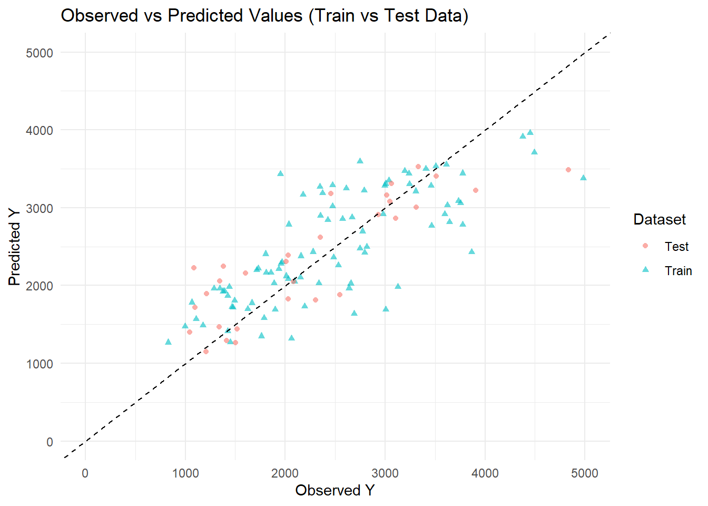
The plots Observed vs. Predicted values for the training and test datasets. This scatterplot compares predicted values of the outcome variable 𝑌 from the fitted model against observed values, separately for training and test data. The dashed 45-degree reference line represents perfect prediction (i.e., predicted = observed). Points closer to this line indicate better predictive performance. Triangles (blue) represent the training set, and circles (pink) represent the test set. The distribution around the reference line suggests the model captures the general trend in both datasets, though some variability is observed, particularly at lower and higher ranges of 𝑌, with a slightly wider spread in the test set. Overall, this plot supports the finding of Model with all predictors included porfoms better accross different datasets.
I want to print RMSE for all models including train and data test
Model RMSE
1 Null Model 948.3526
2 Model 1 (DOSE only) 702.7909
3 Model 2 (All Predictors) 627.2724
4 Model 2 (Test Data) 518.2239
Conclusion
The predictive performance of the models was assessed using root mean squared error (RMSE). The null model, which includes no predictors, had the highest RMSE (948.35), indicating poor predictive accuracy. Model 1, which included only the DOSE variable, showed a substantial improvement with an RMSE of 702.79. Model 2, incorporating all available predictors, further reduced the RMSE to 627.27 on the training data, suggesting that additional variables contributed meaningful predictive value. Model 2 achieved its best performance on the test data, with an RMSE of 518.22, indicating good generalization to unseen data. These results highlight the importance of including multiple relevant predictors to enhance model accuracy and reliability